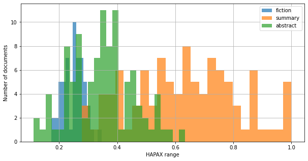
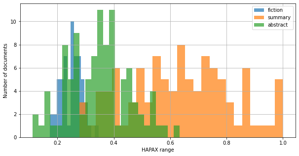

3. Classification and Feature Engineering¶
This chapter demonstrates how to apply what we’ve learned so far about document annotation with spaCy. Specifically, we will be discussing how to build a text classifier. Classification is a core task in NLP, and such models usually work by making predictions on the basis of probability distributions across a corpus’s features. However, we won’t dive too deeply into the details of modeling (eg., the underlying math, model selection, fine tuning, and so on); instead, we will focus on the features we send to our model. If you attended our Getting Started with Textual Data series, you may remember that computationally analyzing text requires us to engineer, or create, features. Often, these features are token counts. But there are other features we can use to represent information about our data, and document annotation gives us the tools to create them. This chapter, then, will demonstrate how to do so and, along the way, it will discuss what considerations go into the process.
We’ll work with a small corpus to test out some of these features. Admittedly, the documents therein are a bit of a weird mix: our corpus is comprised of ~50 Sherlock Holmes short stories (courtesy of the McGill txtLAB), 100 movie summaries from the CMU Movie Summary Corpus, and 100 PLOS ONE biomedical abstracts. Why such a disparate corpus? Well, our focus here is on how different approaches to feature engineering might help you partition texts in your own corpora, so our intent is less about showing you a completely real word situation and more about outlining a few options you might pursue when using NLP methods in your research. For this reason, having very different types of text will make it clear how these features divide up a corpus. While we think these options are translatable across a variety of documents and research areas, know that, to an extent, the results we’ll discuss in this chapter are somewhat artificial.
Learning objectives
By the end of this chapter, you will be able to:
Write memory-efficient code to work with corpora and creating the requisite data structures for classification tasks
Build a naive Bayes classification model
Recognize whether a model might be overfitted
Identify possible feature sets to engineer for text data
Engineer those features using
spaCy’s document annotation modelValidate your engineered features
3.1. Workflow set up¶
With the preliminaries out of the way, let’s get started. As before, we’ll begin by loading our spaCy model.
import spacy
nlp = spacy.load('en_core_web_md')
Later on we’re going to do some work with sentiment analysis. spaCy can help us with this to an extent, but the default pipeline of the model does not include a sentiment component. You can check which processes a model will run on a document with the following:
for name in nlp.component_names:
print(name)
tok2vec
tagger
parser
senter
ner
attribute_ruler
lemmatizer
3.1.1. Changing spaCy pipeline components¶
We’ll need to add a pipe to the pipline. In this case, we’re using a sentiment analysis tool that’s been ported over from the TextBlob library (which is itself a useful tool for NLP!). Adding it to the pipeline is simply a matter of using nlp.add_pipe().
from spacytextblob.spacytextblob import SpacyTextBlob
nlp.add_pipe('spacytextblob')
<spacytextblob.spacytextblob.SpacyTextBlob at 0x124c1cd68>
Now, if we run through the component names, we’ll see that the model performs sentiment analysis when it processes documents. Adding pipes defaults to putting them at the end of all other components, but it’s also possible to change their order.
for name in nlp.component_names:
print(name)
tok2vec
tagger
parser
senter
ner
attribute_ruler
lemmatizer
spacytextblob
It’s also possible to remove model components. You might do so if you know you don’t need certain kinds of information about your documents. For example, in this session we won’t be doing any named entity recognition, so we’ll drop this component from the pipeline. This will shorten our procesing time and it will decrease the amount of data associated with each document.
Once we remove a pipe with nlp.remove_pipe(), we can use an assertion to check whether it is in the pipeline.
nlp.remove_pipe('ner')
assert 'ner' in nlp.component_names, 'Named entity recognition is no longer in the pipeline!'
---------------------------------------------------------------------------
AssertionError Traceback (most recent call last)
/var/folders/h7/tzxfms7d2z7gwlgtbvw15msc0000gn/T/ipykernel_91547/2213502185.py in <module>
1 nlp.remove_pipe('ner')
2
----> 3 assert 'ner' in nlp.component_names, 'Named entity recognition is no longer in the pipeline!'
AssertionError: Named entity recognition is no longer in the pipeline!
Later on we’ll discuss how to use the extra component we’ve just added to our model. But for now, let’s move on to loading our corpus.
3.1.2. Generating labels¶
First, we need to make some labels. Each file is labeled with its text type. We’ll go through every file name and extract that information to build a list of labels, which we’ll later associate with our corpus.
import glob
import re
paths = glob.glob('data/session_two/corpus/*.txt')
paths.sort()
labels = []
for path in paths:
if re.findall('fiction', path):
labels.append(1)
elif re.findall('summaries', path):
labels.append(2)
else:
labels.append(3)
label_dict = {1: 'fiction', 2: 'summary', 3: 'abstract'}
3.1.3. Lazy loading¶
With this done, we can load and process our files. There are around 250 of them, and some are fairly long. To handle this, we’ll use a slightly different process than what we’ve been doing so far. Instead of loading everything into memory all at once, we’ll incrementally stream in files using a generator and let spaCy automatically call up the next file when it’s finished processing. This is called lazy loading. It’s a good idea to do this kind of thing when you’re working with large corpora: it’s far more memory efficient, and it saves you the trouble of needing to write a bunch of for loops to manage the preprocessing work.
The code is fairly straightforward. All we need to do is send a function our filepaths and have it yield out opened files.
def lazy_load(paths):
for path in paths:
doc = open(path, 'r')
yield doc.read()
doc_pointer = lazy_load(paths)
There is a downside to this, however: remember that generators just point to the next object; they only work with the data represented by that pointer when some process is called. Accordingly, this can make it difficult to poke around in your data, since here:
doc_pointer
<generator object lazy_load at 0x153d266d8>
…all we see is the pointer. To know what’s actually in the corpus, you’d need to call in an instance, with next():
doc = next(doc_pointer)
print(doc[:115])
Adventure V. The Musgrave Ritual
An anomaly which often struck me in the character of my friend Sherlock
Holmes w
Luckily, spaCy is good at handling this sort of thing. All we need to do is wrap our paths in lazy_load() and send this to a function called nlp.pipe(). The latter will go through our generator and process each document when it’s ready to do so.
to_process = nlp.pipe(lazy_load(paths))
3.2. Preprocessing¶
With our model, labels, and loading function all set up, we can start processing our files. We’re going to use a fairly simple cleaning function to weed out extra cruft in our documents. For every document, this function – which we’ll call clean() – will return a list of lowercased and lemmatized words (provided these words aren’t stop words!).
def clean(doc):
cleaned = []
for token in doc:
if token.is_alpha:
if token.is_stop == False and len(token) > 2:
token = token.lemma_
token = token.lower()
cleaned.append(token)
return cleaned
Now, we can use a simple list comprehension to clean our entire corpus. This will load every file, send it through spaCy, and then send it through our custom cleaning function.
cleaned = [clean(doc) for doc in to_process]
Another reason for using a lazy loader on our files has to do with later work we’ll do in this session: though our work so far has involved creating bag of words representations of the corpus, later steps will require full text representations. With lazy_load() written, we can easily reprocess our corpus whenever we’d like.
3.3. Modeling I: tf-idf¶
Once our texts have been cleaned, we can build a simple model to predict the three different document classes in our corpus. If you’re thinking, But a model requires numeric data, and so far we just have bags of words, you’d be right. There’s one more step that we need to do before actually building the model. It should be a familiar one: we need to transform our cleaned documents into a document-term matrix (DTM), which will hold the weighted term counts for the entire corpus. In essence, this data structure will hold all the features that our model will use to make its predictions. Every token (or more properly, type) is a feature, the value of which a document may or may not have.
The TfidfVectorizer in scikit-learn makes creating our DTM an easy task. Just remember that our cleaned texts are currently stored as a list of lists. We need to join them back into strings before sending them to the vectorizer.
from sklearn.feature_extraction.text import TfidfVectorizer
vectorizer = TfidfVectorizer()
vectorized = vectorizer.fit_transform([' '.join(doc) for doc in cleaned])
When we build models, we use a portion of our data to train the model and a smaller portion of it to test the model. The workflow goes like this. First, we train the model, then we give it our test data, which it hasn’t yet seen. We, on the other hand, have seen this data, and we know which labels the model should assign when it makes its predictions. By measuring those predictions against labels that we know to be correct, we’re thus able to appraise a model’s performance.
scikit-learn has functionality to automatically split our data into training and test sets. Below, we load in the train_test_split() function and give it our DTM and our corresponding labels. This will output training data/labels and test data/labels. We’ll also specify what percentage of the corpus we devote to training and what percentage we devote to testing. For this task, we’ll use an 70/30 split.
Be sure to shuffle the data!
Right now, our labels are all grouped together, so an even split wouldn’t give the model an adequate representation of the data.
from sklearn.model_selection import train_test_split
train_data, test_data, train_labels, test_labels = train_test_split(
vectorized,
labels,
test_size=0.3,
shuffle=True,
random_state=357
)
print(
f"Number of documents to train the model: {train_data.shape[0]}",
f"\nNumber of documents for testing the model: {test_data.shape[0]}",
f"\nTotal features from the document-term matrix: {train_data.shape[1]:,}"
)
Number of documents to train the model: 179
Number of documents for testing the model: 77
Total features from the document-term matrix: 18,610
We can now build a model. One of the most popular model types for text classification is a naive Bayes classifier. While we won’t be diving into the details of modeling, it’s still good to know in a general sense how such a model works. It’s based on Bayes’ theorem, which states that the probability of an event can be gleaned from prior knowledge about the conditions that relate to that event. Formally, we express this theorem like so:
That is, given the probability of class \(y\) in a dataset, what is the conditional probability of a set of features \((x_1,...,x_n)\) occuring within \(y\)? We derive this by taking the product of these two probabilities (for the class and for the features) over the features’ probabilities.
More generally, we can state the above as:
In our case, \((x_1,...,x_n)\) is the set of \(n\) tokens represented by the columns in our document-term matrix. For a given document, the classifier will examine the conditional probabilities of its tokens according to each of the classes we’re training it on. Ideally, the token distributions for each class will be different from one another, and this in turn conditions the probability of a set of tokens appearing together with a particular set of values. Once the classifier has considered each case, it will select the class that maximizes the probability of a document’s tokens appearing together with its specific frequency values. This is known as an argmax classifier.
If this seems like a lot, don’t worry. While it can take a while to get a grip on the underlying logic of such a classifier, at the very least it’s easy enough to implement the code for it. scikit-learn has a built-in model object for naive Bayes. We just need to lead it in and call .fit() to train it on our training data/labels. With that done, we use .predict() to generate a set of predicted labels from the test data.
from sklearn.naive_bayes import MultinomialNB
NB_model = MultinomialNB()
NB_model.fit(train_data, train_labels)
NB_predictions = NB_model.predict(test_data)
Finally, we can generate a report of how well the model performed by comparing the predicted labels against the testing labels. Below, we use classification_report() to generate a performance report. This report give us information about three key metrics, all of which have to do with balancing true positive and true negative predictions (i.e. correct labels) from false positive and false negative predictions (i.e. incorrect labels):
Precision: the proportion of labels that are actually correct
Recall: the proportion of correct labels the model was able to successfully find
F1 score: a weighted score of the first two
from sklearn.metrics import classification_report
report = classification_report(test_labels, NB_predictions, target_names=label_dict.values())
print(report)
precision recall f1-score support
fiction 1.00 1.00 1.00 22
summary 1.00 0.91 0.95 33
abstract 0.88 1.00 0.94 22
accuracy 0.96 77
macro avg 0.96 0.97 0.96 77
weighted avg 0.97 0.96 0.96 77
Not bad at all! In fact, this model is probably a little too good: those straight 1.00 readings likely indicate that the model is overfit; you’ll almost never see something like this happen when working with your own data. This is almmost cetainly due to the hodgepodge nature of our corpus, wehre the divisions between different document classes is particularly clear. In such a scenario, the model has learned to distinguish idiosyncracies of our corpus, rather than certain general features about what, say, constitutes a short story vs. an abstract. There are a number of ways to mitigate this problem, ranging from pruning the vocabulary we use in our DTM to sending a model entirely different features. The rest of this chapter is dedicated to this latter strategy.
3.4. Feature Engineering¶
Training a classifier with tf-idf scores is an absolutely valid method. Indeed, it’s often a very effective method: we expect different types of documents to contain different types of words. But there are other features we can use to train a classifier, which don’t rely so heavily on particular words. There are a number of scenarios for which you might consider using such features. Among such scenarios is the one above, where word types are so closely bound to document classes that a model overfits itself. What would happen, for example, if we sent this classifier a document that doesn’t contain any of the outlier words that help the model make a decision? Or what if we sent it a short story that contains word types classed as biomedical abstracts? In such instances, the model would likely fail in its predictions. We need, then, another set of features to make decisions about document types. This is where feature engineering with document annotation steps in.
There are two key aspects of feature engineering. You need to know:
What you want to learn about your corpus
What kind of features might characterize your corpus
The first point is straightforward, but very important. Your underlying research question needs to drive your computational work. Though we’re working in an exploratory mode, there’s actually a research question here: what features best characterize the different genres in our corpus?
The second point is a little fuzzier. It’s likely that you’ll know at least a few things about your corpus, before you even load it into Python. For instance, even knowing where the data comes from can serve as an important frame with which to begin asking informed questions. While there’s always going to be some fishing involved in exploratory work, you can keep your explorations somewhat focused by leveraging your prior knowledge about your data.
In our case, we already know that there are three different genres in our corpus. We also know in a general sense some things about each of these genres. Abstracts, for example, are brief, fairly objective documents; often, they’re written in the third person with passive voice. The same goes for plot summaries, though we might expect the formality of the language in summaries to be different than abstracts. On the other hand, fiction tends to be longer than the other two genres, and it also tends to have a more varied vocabulary.
To be sure, these are general assumptions, which may or may not mesh with our actual corpus. But they’re a good starting point, and we can write some code to generate metrics that will show whether our assumptions are, in fact, correct.
We’ll do so in two passes. Our first set of features will rely on the cleaned, bag-of-word representations of the corpus documents, which we’ve already produced above. The second, on the other hand, will collect information about things like grammatical structure or part-of-speech tags, and thus they will require us to use full, as-is representations of our documents.
3.4.1. Document length¶
The first of our metrics is a simple one: document length. Document length is a surprisingly effective indicator of different genres, and, even better, it’s very easy information to collect. In fact, there’s no need to write custom code; we can just use len().
3.4.2. Lexicon I: hapax richness¶
With our document length function written, we can use its output to create another metric, called hapax richness. If you’ll recall from the second day of our Getting Started with Textual Data workshop series, a hapax (short for “hapax legomenon”) is a word that occurs only once in a document. Researchers, especially those working in authorship attribution, will use such words to create a measure of a document’s lexical complexity: the more hapaxes in a document, the more lexically complex that document is said to be.
Generating a hapax richness metric involves finding all hapaxes in a document. Once we’ve done so, we simply take the sum of those tokens over the total number of tokens in a document.
from collections import Counter
def hapax_richness(doc, doc_len):
tokens = Counter(doc)
hapaxes = Counter(token for token, count in tokens.items() if count == 1)
n_hapaxes = sum(hapaxes.values())
return n_hapaxes / doc_len
3.4.3. Inspecting our work¶
Now that we have two methods of generating metrics about our corpus, let’s run each document through them and put the results in a pandas dataframe. We’ll also include the labels from before, which will require us to zip the document list together with the list that contains our labels.
import pandas as pd
basic_features = []
for doc, label in zip(cleaned, labels):
doc_len = len(doc)
hapax = hapax_richness(doc, doc_len)
basic_features.append({
'LENGTH': doc_len,
'HAPAX': hapax,
'LABEL': label
})
basic_features = pd.DataFrame(basic_features)
basic_features['LABEL_NAME'] = basic_features['LABEL'].replace(label_dict)
Let’s take a look:
basic_features.groupby('LABEL').sample(2)
| LENGTH | HAPAX | LABEL | LABEL_NAME | |
|---|---|---|---|---|
| 45 | 2913 | 0.276347 | 1 | fiction |
| 16 | 2612 | 0.247320 | 1 | fiction |
| 100 | 269 | 0.472119 | 2 | summary |
| 150 | 392 | 0.410714 | 2 | summary |
| 184 | 683 | 0.237189 | 3 | abstract |
| 173 | 225 | 0.226667 | 3 | abstract |
There are a few ways to inspect our work more closely and determine whether these are meaningful features. All of them will leverage the .groupby() in pandas to partition subsets of the data and investigate the feature distributions therein. Throughout, we’re interested in identifying features that seem to be different for each label type.
You may find simple metrics like the mean distrubtions for features to be useful:
basic_features.groupby('LABEL_NAME')[['LENGTH', 'HAPAX']].mean()
| LENGTH | HAPAX | |
|---|---|---|
| LABEL_NAME | ||
| abstract | 547.980000 | 0.346419 |
| fiction | 3286.678571 | 0.250794 |
| summary | 178.930000 | 0.630816 |
There’s some nice separability here!
Determing whether features are correlated is also useful. We can break out by-label correlations with the following:
basic_features.groupby('LABEL_NAME')[['LENGTH', 'HAPAX']].corr()
| LENGTH | HAPAX | ||
|---|---|---|---|
| LABEL_NAME | |||
| abstract | LENGTH | 1.000000 | -0.337493 |
| HAPAX | -0.337493 | 1.000000 | |
| fiction | LENGTH | 1.000000 | -0.882208 |
| HAPAX | -0.882208 | 1.000000 | |
| summary | LENGTH | 1.000000 | -0.778418 |
| HAPAX | -0.778418 | 1.000000 |
It makes sense that length and hapax richness tend to be negatively correlated: the longer a text is, the more likely we are to see repeated words. In this sense, as it stands our hapax feature might not be as representative as we’d like it to be, especially when it comes to a document class like fiction. Surely there are rare, potentially important words in the fiction, but they’re largely blurred by the length of the documents. To mitigate this, we could use a window size to determine hapax richness, modifying the code above, for example, to break texts into smaller chunks and get a mean hapax score for all chunks. We won’t do this now, but keep in mind that you may have to make such modifications when engineering features.
Raw metrics are useful, but so are visualizations. Below, we put together a quick function to show the by-label distribution of features in our data. The resultant histograms will make it clear whether our features are actually helping to partition our data, or whether they’re just muddling distinctions between document classes even more.
import matplotlib.pyplot as plt
def graph_dist(df, feature, groupby='LABEL', label_dict=label_dict):
fig, ax = plt.subplots(figsize=(10,5))
for (i, d) in df.groupby(groupby):
n_bins = round(len(d) * .25)
d[feature].hist(ax=ax, label=i, alpha=0.7, bins=n_bins)
ax.legend(list(label_dict.values()))
ax.set_ylabel("Number of documents")
ax.set_xlabel(f"{feature} range")
return fig
for feat in ['LENGTH', 'HAPAX']:
graph_dist(basic_features, feat);
 

These histograms usefully show us divisions among our classes. While the document lengths of summaries and abstracts have a similar shape and magnitude, there’s good separability between their two distributions in the hapax richness scores. And throughout, documents labeled with fiction are notably different from the other two classes; a classifier is sure to register this. Indeed, this difference could serve as a counter to the suggestion above about creating a window size for hapax richness. Though windowing the documents might create a more realistic representation, we’re already seeing useful separability within the hapax metric as it stands. In this sense, you might approach feature engineering with a fair bit of pragmatism, especially with regard to the wider goals of your research question. It may be that the fact that there’s a difference at all is enough, regardless of whether it’s the best, most nuanced representation of your data.
For our purposes, what we have so far is, in fact, enough. We can feel pretty confident that the two features we’ve engineered so far will serve as useful metrics for a classifier, which is our ultimate intent for our session. With this established, it’s time to move on to more complex metrics: ones that depend on full text representations of the documents.
3.4.4. Active vs. passive voice¶
The reason the following metrics are more complex is twofold. First, they require a little bit more in the way of coding than the ones above; and second, they require us to think more carefully about relationships across our corpus (often with a fair bit of hypothesizing!). To wit: the first of our full text metrics concerns the distinction between active and passive voice. The hypothesis here is that the objective, report-like nature of abstracts (and perhaps summaries) will have more passive voice overall than in fiction, which tends to be focused on present action. To measure this, we’ll use spaCy’s dependency parser to identify the percentage of passive voice subjects in a document, versus active subjects.
We’ll implement this in a function, which will tally the number of passive subjects and the number of active subjects in each sentence of the document. Then, it will sum together the total number of subjects and divide the number of passive subjects by that total. As above, we’ll use a Counter to store the intermediary information generated throughout this function.
def score_passive(doc):
subjects = Counter({'nsubjpass': 0, 'nsubj': 0})
for sent in doc.sents:
for token in sent:
if token.dep_ in ('nsubjpass', 'nsubj'):
subjects[token.dep_] += 1
total_subjects = sum(subjects.values())
return subjects['nsubjpass'] / total_subjects
3.4.5. Lexicon II: abstract nouns¶
The code for our second metric will follow a similar structure to the code above. Below, we use spaCy’s part-of-speech tags to identify nouns in a document. Then we determine whether these are abstract nouns, on the theory that abstracts and summaries are likely to have more nouns that denote ideas, qualities, relationships, etc. than fiction.
But how do we find an abstract noun? One simple way is to consider a noun’s suffix. Suffixes like -acy or -ism (e.g. accuracy, isomorphism) and -hip or -ity (e.g. relationship, fixity) are good, general markers of abstract nouns. They’re not always a perfect match, but they can give us a general sense of what kind of noun it is that we’re working with.
ABSTRACT_SUFFIX = ('acy', 'ncy', 'nce', 'ism', 'ity', 'ty', 'ent', 'ess', 'hip', 'ion')
def score_abstract(doc):
nouns = Counter({'abstract': 0, 'not_abstract': 0})
for token in doc:
if token.pos_ == 'NOUN':
if token.suffix_ in ABSTRACT_SUFFIX:
nouns['abstract'] += 1
else:
nouns['not_abstract'] += 1
total_nouns = sum(nouns.values())
return nouns['abstract'] / total_nouns
3.4.6. Lexicon III: cardinal numbers¶
So far we’ve been eliding potentially important differences between abstracts and summaries. Let’s develop a metric that might help us distinguish between the two of them. One such metric could be a simple count of the number of cardinal numbers in a document: we’d expect summaries to have less than abstracts (whether because the latter reports various metrics, or because they often contain citations, dates, etc.). Using spaCy’s part-of-speech tagger will help us identify these tokens. Once identified, it’s just a matter of incrementing a count.
def num_cardinals(doc):
numbers = 0
for token in doc:
if token.tag_ == 'CD':
numbers += 1
return numbers
Note that we’ll want to convert the return from this function into a percentage over total tokens. We’ll do so in a later processing function that ties together everything we’ve written so far.
3.4.7. Sentiment¶
The final metric we’ll generate attempts to capture something about the sentiment of each document. Sentiment analysis is a popular NLP technique, which researchers use to determine affective and subjective information. Implementations vary, but most will assign a numeric value that represents the polarity of a text, that is, its general tendency toward negative, neutral, or positive sentiment. Typically, these values are a bounded range of [-1, 1], with -1 being the most negative sentiment, 1 the most positive, and 0 for neutral. Some implementations will also score the subjectivity of a text, with scores closer to 0 representing more “objective” texts and those tending toward 1 representing highly “subjective” texts.
The data and methods that drive sentiment analysis are highly varied. The newest implementations use deep learning models to capture fine-grained nuances in text strings, while older versions of the technique are lexicon-based. The latter usually score texts with a combination of rule-based matching and predetermined values for words.
If you use sentiment analysis, especially lexicon-based sentiment analysis (as we’re doing here), it’s important to keep in mind that the scores are, well, subjective. Someone had to go in and decide what they thought the sentiment of words or phrases are. If you were to read the same text, you might not agree. When possible, try to find the dictionary that supplies the analyzer and get a sense of the classification rules that produce a value (for example, here is the dictionary that drives the TextBlob analyzer below). Good sentiment analysis toolkits will make this information readily available.
For our purposes, we’ll generate a very simple sentiment metric. The TextBlob pipe we added to our model assigns scores for an entire document, individual sentences, or single spans and tokens. We’ll use sentences. The code below goes through each sentence in the document, accesses its ._.polarity attribute, and assigns that to a list. Then it takes the mean score of everything in the list.
import numpy as np
def score_polarity(doc):
scores = []
for sent in doc.sents:
score = sent._.polarity
scores.append(score)
return np.mean(scores)
With all of our advanced feature engineering functions written, we can process our corpus. We’ll call the above functions together using a single get_stats() function, which returns a dictionary of feature–value pairs.
def get_stats(doc):
passivity = score_passive(doc)
abstractness = score_abstract(doc)
numbers = num_cardinals(doc)
polarity = score_polarity(doc)
return {
'PASSIVITY': passivity,
'ABSTRACTNESS': abstractness,
'NUMBERS': numbers,
'POLARITY': polarity
}
As above, we use lazy_load in conjunction with nlp.pipe() and a list comprehension to produce a list of feature dictionaries. These we can easily convert into a dataframe.
to_process = lazy_load(paths)
advanced_features = [get_stats(doc) for doc in nlp.pipe(to_process)]
Now we can convert our advanced features into a dataframe and join them to our basic features. We’ll also reorder the columns.
advanced_features = pd.DataFrame(advanced_features)
features = basic_features.join(advanced_features)
reorder = [
'LENGTH', 'HAPAX', 'PASSIVITY', 'ABSTRACTNESS', 'NUMBERS', 'POLARITY', 'LABEL', 'LABEL_NAME'
]
features = features[reorder]
Before we can inspect the results with our histogram visualization, we need to make a small modification. Remember that the cardinal number values are raw – we need to divide them by their corresponding document lengths.
features = features.assign(NUMBERS = features['NUMBERS'] / features['LENGTH'])
Time to visualize our new features!
for feat in ['PASSIVITY', 'ABSTRACTNESS', 'NUMBERS', 'POLARITY']:
graph_dist(features, feat);
Interestingly, the sentiment score does not appear to be particularly separable. All of our classes are mostly lumped together in terms of magnitude and range. We’ll need to keep this in mind when building our model – in fact we may even toss this feature out altogether. On the other hand, our three other features seem like they will serve our model well. There’s good separation between the classes, and within the classes themselves the features appear to be fairly well distributed.
3.5. Modeling II: Other Features¶
From here, we can build another model. This time, however, we send it the new features we’ve just engineered, rather than the big DTM from before. The workflow will be almost entirely the same, though there are two changes we need to implement:
We need to scale our data. This isn’t actually necessary for naive Bayes models, but some of our features contain negative values, which the model won’t accept. What we’ll do, then, is normalize all of our features to a
[0,1]scale. This will preserve the structure of our features but will remove the problematic values. We can do so withMinMaxScalerWe need to change the type of distribution our model assumes. A multinomial distribution is the norm for text, as it works well with data that can translated into counts. But we’re no longer working with text data per se; we’re working with data about text, and the values represented therein are continuous. Because of this, we’ll use a model that assumes a Gaussian, or normal, distribution. This we can do with
GaussianNB
from sklearn.preprocessing import MinMaxScaler
from sklearn.naive_bayes import GaussianNB
Once these two objects loaded, we initialize a scaler and send it the features we want to train on (note that we are subsetting our features object, since it also contains labeling information). With the scaled data created, we once again use train_test_split() to create the training and test data.
min_max = MinMaxScaler()
keep = ['LENGTH', 'HAPAX', 'PASSIVITY', 'ABSTRACTNESS', 'NUMBERS', 'POLARITY']
scaled = min_max.fit_transform(features[keep])
train_data, test_data, train_labels, test_labels = train_test_split(
scaled,
labels,
test_size=0.3,
shuffle=True,
random_state=357
)
Time to fit the model and make some predictions.
G_model = GaussianNB()
G_model.fit(train_data, train_labels)
G_predictions = G_model.predict(test_data)
How did it do?
report = classification_report(test_labels, G_predictions, target_names=label_dict.values())
print(report)
precision recall f1-score support
fiction 1.00 1.00 1.00 22
summary 0.97 0.94 0.95 33
abstract 0.91 0.95 0.93 22
accuracy 0.96 77
macro avg 0.96 0.96 0.96 77
weighted avg 0.96 0.96 0.96 77
Surprisingly well, actually! In fact, this second model is arguably better than the first one we built. It’s probably still overfitted to fiction, but the scores for the other document classes indicate that it’s been able to generalize out from specific words to a broader class of features that typify one kind of document from the next. And – just as important – it’s been able to do so with a far smaller set of features. Whereas the DTM we used to train the first model had ~18.5k features, this one only needs six.
These results might cause us to ask: What other features might we use in this situation? What are other measurable ways of thinking about the nature of text? How might such considerations change depending on the corpus we’re using? While all these questions are beyond the scope of present chapter, we hope you’ll keep them in mind as you do your own work with NLP.